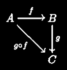

#book
src:
Since it's an algebra book with focus on Category Theory, it's "operations between sets" that takes the most part of this section. A list of a few of those operations the author gives is:
First we talk about the Cartesian product and the disjoint union of two sets, but only introducing their definitions here, the actual beauty (e.g. that both are dual to each other) comes in the 5th section. the Cartesian product is like putting the elements perpendicularly on an abstract ambient plane and multiplying all one by one to build a rectangle, easy! it's the disjoint union that has a story: take two sets, copy them such that no information gets lost and that resulting copies are disjoint, then unite them. looks easy, and it is, but there's a logical/set-theoretical complication we will get into in the next section when we talk about well-definedness.
Now, we talk about a relation on a set, in particular an "equivalence relation", and how that induces a partition on a set.
How would we define a relation? we try to model the most obvious relation on a set we know of, the standard order relation, that of "less than or equal to", on the set of integers. for a given integers there're countably many other integers that satisfies this standard relation. so it's natural to think that if we know all such countable set of integers satisfying the standard relation for all the integers, it'd be a subset of the Cartesian product of the set with itself, and it is. the most known relation on a set is the "equality relation", and it's obvious that it's the diagonal of this Cartesian product. now the goal is to use the "equality(=) relation" to model "equivalence relation" in general. and the way mathematical philosophy works, we try to find the properties of "=" relation that characterize it uniquely, and then abstract away all the particulars, resulting in a generalized "=" relation.
It turns out, the characterizing properties of equality relation are:
We know what partition means intuitively. it's a set with disjoint subsets covering the whole set. there are many partitions of a set, but once an equivalence relation is defined on a set, there's a natural partition associated with it. reflexivity cuts the whole space/set into the set of points, then symmetry kinda merges few of them into one, and then transitivity locks those merges in, resulting in a partition. these locked merged points form a subset called "equivalence class" of the equivalence relation. the partition is the set of equivalence classes, because obviously equivalence classes are disjoint and they fill up the whole set. this set of equivalence classes is called "quotient set".
This construction of quotient set we did in last paragraph is i think the most important and starting point of abstract algebra. i hope my intuition helped here, but you must go through the formal construction to truly feel it. this is like the alphabet of any written language, you MUST go through it, at least ones. this was the last operation on sets, the operation of Quotient by an equivalence relation. as the author puts it:
One way to think about this operation is that the equivalence relation becomes equality in the quotient [...]. In other words, taking a quotient is a way to turn any equivalence relation into an equality.
There is a similar construction to this: to build an equivalence relation (and therefore partition from the above construction, and finally into equality) on a set from a given function between two sets. the idea is to define an equivalence relation on the domain set by defining the equivalent elements to be precisely those that maps to the same image in the co-domain set. we go deeper into thin in the next section when we talk about canonical decomposition, which essentially is this very construction. (this is like fetching back the equality from the co-domain set to the domain set)
For the same reason we didn't go into Set Theory stuff, we won't go into definition and related stuff of the concept of functions between sets. but there's one thing worth mentioning that's relevant to Category Theory, The Commutative Diagrams! the very first example, the author has (and is usually) given is that of composition of functions.

Now, we talk about Injections, Surjections, and Bijections of Sets. Injection means all information gets copied, surjection means some information gets deleted, and bijection means all information gets copied without any deletion.
There are really three ways of defining these. The author does it beautifully, and here i present the overview.
Monomorphism and epimorphism are defined considering the philosophy that we should be able to talk about a property (it being an injection/srujection) of a function between two sets only in terms of other/all functions on the same two sets. it's a beautiful definition, and a proof that it's equivalent to previous two definitions. checkout the book for the formal and actual definition.
The Crux, and perhaps the most beautiful construction in algebra is that of Canonical Decomposition, which is the underlying base of the four pillars (especially the first one), namely the four isomorphism theorems, of standard algebraic objects/structures like groups, rings, modules, algebras, and more generally congruences. The statement of this decomposition is that
every function between two sets can be decomposed into three intermediate ones, the surjection map, the bijection map, and the injection map, such that compositions of those is the function itself.
This matters because functions are a way of transporting information/structure from one place to another. An ability to decompose a function says that there exists independent parts of given information/structure, in particular the canonical decomposition says these independent parts are formed by lumping together some information, then perhaps re-labeling them isomorphically, and finally identifying the resulting thing to be a part of another information. formally, the lumping process is a surjection/projection map, the re-labeling process is a bijection/isomorphism, and identifying part of another information is injection. injection is obvious, bijection has some logical/set-theoretical complications like well-definedness, and surjection/projection is precisely the canonical map from the set to its partition as we talked about in the last para of the last section.
Well-definedness is asking the question "are there ambiguities in the definition of a function?". if there indeed is an ambiguity, e.g. when we try to define a concrete bijection between two sets that are bijective but the domain set is not a set of objects but a set of sets of objects, then we remove it by "choosing" a candidate (and therefore essentially invoking the infamous axiom of choice) and hope that the concrete bijection definition is candidate choice independent. proving/showing this is exactly what remains to be done to prove the canonical decomposition, and you must do it. in the same thread the author mentions "copying" process of the disjoint union definition we mentioned in last section. because there are many (perhaps countably many, and even uncountably many) possible copies of a set, the disjoint union of two sets doesn't have a "unique" answer. a solution might be to "choose" one, but what if we don't? well-definedness then assures us that no matter what copy the disjoint-union process takes in the result will always be isomorphic to each other, so we say it's "unique upto isomorphism" or that this process is "well-defined upto isomorphism".
Aside from the set-theoretical paradoxes and all those logical/set-theoretical complications, I don't think there's any need of motivating the definition. informally category is a collection of objects and a collection of collections of morphisms between objects such that natural properties are satisfied, that identity morphism exists for all objects, composition of morphisms under natural situation is possible, composition is associative, etc... the idea is that definition of category includes only the statements about morphisms, except the existence of objects, aligning to the genesis philosophy of Category Theory that it's morphisms that matter in truly understanding the objects, not what the objects are made up of. (btw, a curious question: when do extrinsic and intrinsic point of views coincide? when is it the case that we don't even need any perspective, that is that we "know" the object "itself"?)
I hope some standard language like Endomorphism, Automorphism, etc... doesn't need any summary. nor would i give any examples, that's why the books exists! here, we try only to summarize the essential insights/theorems/definitions etc...
We talked about three flavors of definitions of types of functions in section 2. it's obvious that in an arbitrary category only the last two flavors (element independent versions) would work, or even make sense. and that's this whole section is about.
(summary of this section is highly dependent on what i understand (and don't), read it with suspicion)
The idea here is to find a statement that describes a property of relationships of some morphisms in a category such that the same statement can be used in all (explains the universality of the statement) the categories to construct/find similarly behaved objects. such universal statements characterize these similarly behaved objects in any category, explaining the words "universal property". truly, the real and beautiful meaning of "universal property" is described using the notion of "functors" between categories, but it has to wait, at least that's what the author does.
The first such property is that of initial and final objects. an initial object is modeled on the familiar set in the category of sets, the empty set, that there exists exactly one map from (explains "initial") the empty set to any non-empty set, the empty map. a final object is modeled on another familiar set in the category of sets, the singleton set, that there exists exactly one map from any set to (explain "final") a singleton set, the constant map. the key thing here is that the set of morphisms between any set and the initial/final set is isomorphic to a singleton set. it can be proved by usual arguments that such (terminal) objects are "unique up to unique isomorphism". that is, a terminal object is unique up to isomorphism, and also that the set of isomorphisms is isomorphic to singleton, that is the isomorphism is unique, explaining "uniqueness" of the terminal object up to "unique isomorphism".
The sections ends with assertions like such and such object with such and such more information in the category of sets is terminal under such and such (universal) property of morphisms. particularly, Quotient set with canonical projection map is universal with respect to the property "a set is mapped to another such that equivalent elements have the same image". this property "looks-like" element dependent, the idea is to formalize the statements such that it doesn't look that way. and this is exactly where we need abstractions over categories, the co/slice categories! informally, a slice category of a category is a category in which the objects are morphisms of the given category and the morphisms are the commutative diagrams of the given category. it's in this slice (or sometimes co-slice. co-X in Category Theory generally means that we're talking about X in the opposite category, the category in which morphisms are reversed. X and co-X are generally regarded as dual to each other) category in which we can formalize that informal universal property without sounding element dependent. sometimes we may need even more abstraction. it's always a task of a mathematician to find out appropriate abstraction in which to formalize a given universal property to find its corresponding terminal object. in our particular example, that of quotients, it turns out to be co-slice category. in a similar way the author states that Products (Cartesian) and Co-products (disjoint union) are terminal under some universal property and that they're dual to each other.
...
...